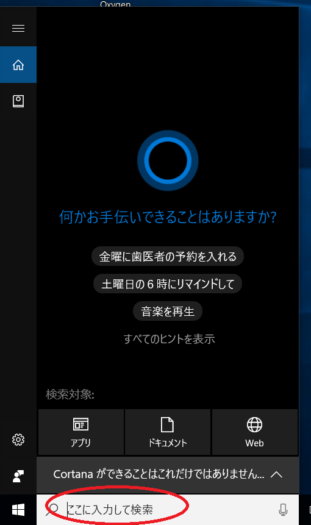
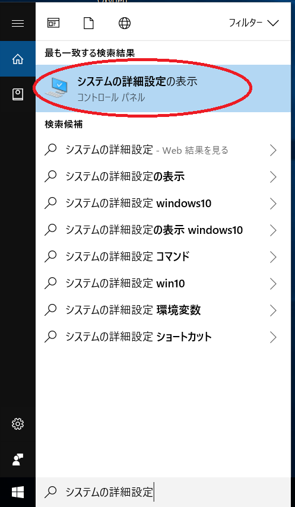
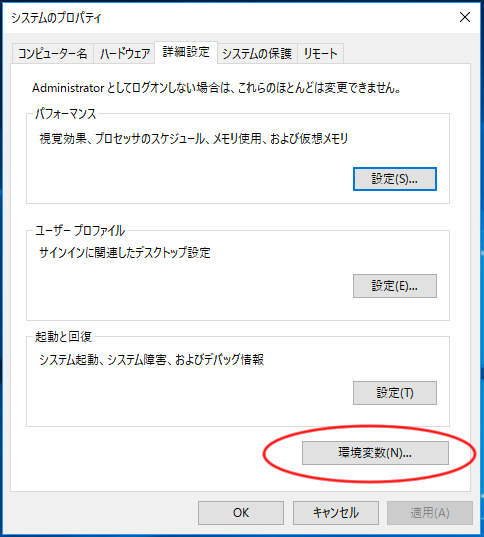
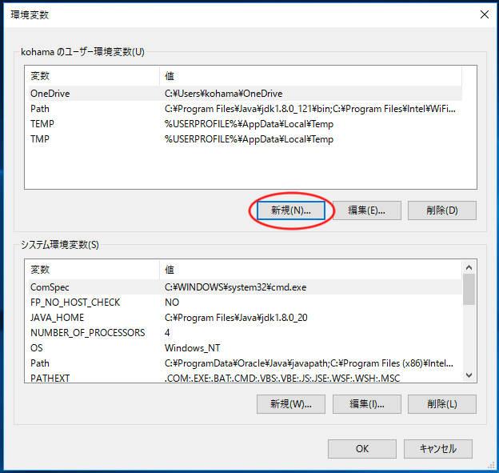
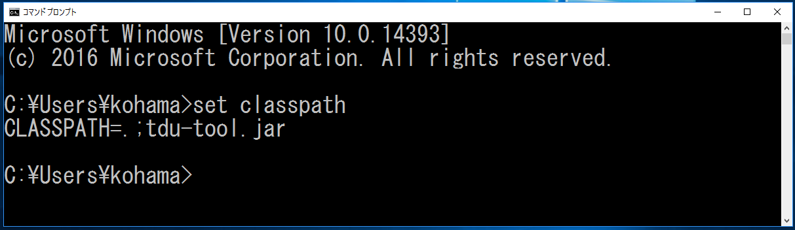
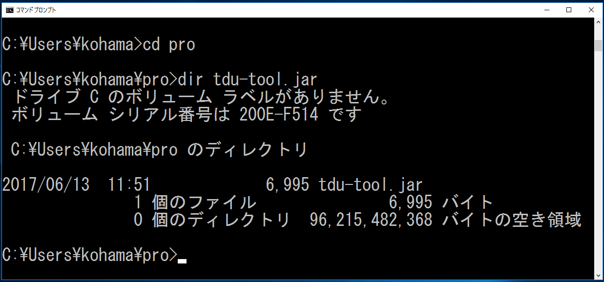

ファイルをダウンロードし、Javaのソースコードを保存しているディレクトリ（フォルダ）に置いてください．
システムの詳細設定の検索をします．
「ここに入力して検索」をクリックします．

「システムの詳細設定」を入力し，
検索結果の「システムの詳細設定の表示」をクリックします．

[詳細設定]のタブを選択し，[環境変数]をクリックします．

ユーザの環境変数の[新規]をクリックします．

を入力して，[OK]をクリックします．
[OK]をクリックします．

コマンドプロンプトを開きます．
set classpath [Enter]
CLASSPATH を確認します．

cd pro [Enter]
プログラムのディレクトリに移動します．
dir tdu-tool.jar [Enter]
tdu-tool.jarを確認します．

（注意事項）
「システムの詳細設定」を修正（変更）した場合は，「コマンドプロンプト」を開き直す必要があります．